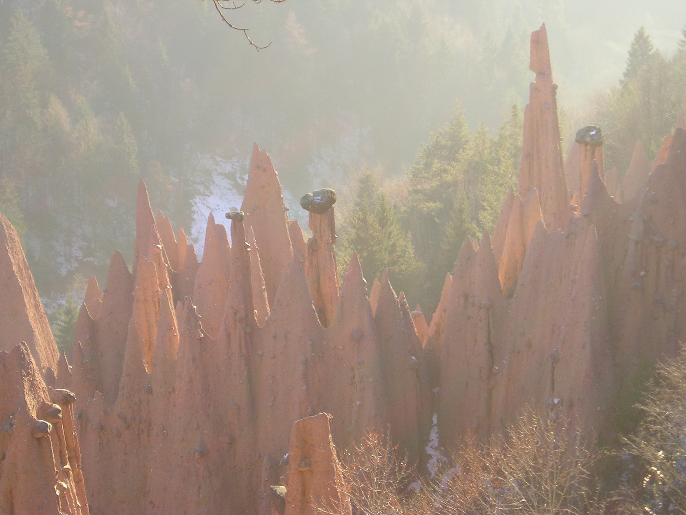
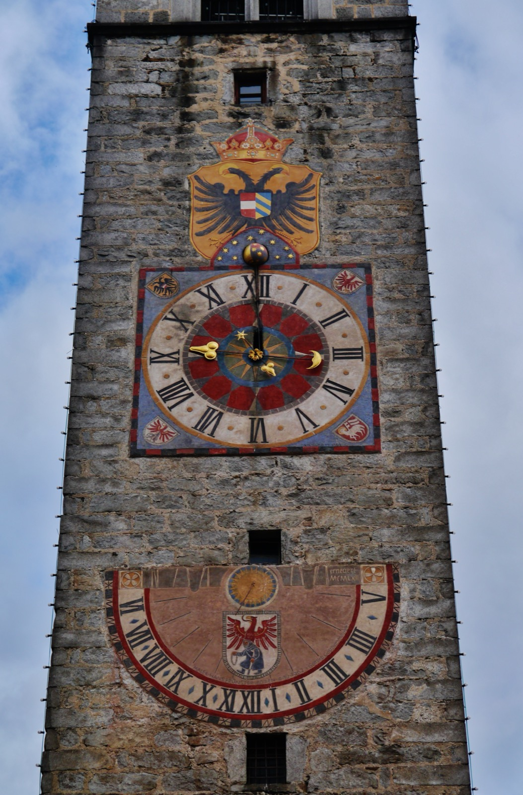
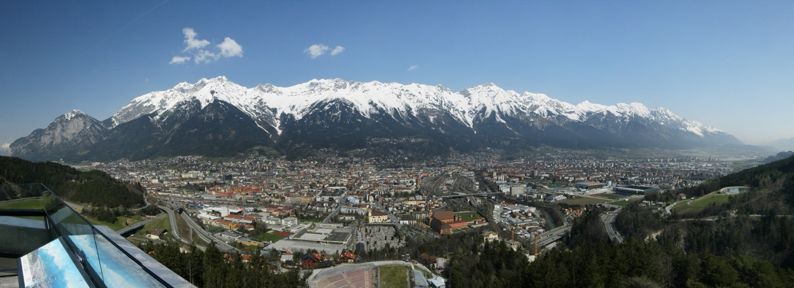

Bolzano
Weather swing
- Selected stays
- $398–$700
- Total drive
- ~6 hr 30
- Best for
- Warm valley walks, Renon
- Main cost
- Longest detour
Weather pivot · September 12–14, 2026
Two active nights between Munich Airport and Forsthofgut—comparing the warmest detour, the practical Italian middle ground, and the simplest route.
Forecast and Airbnb snapshot checked September 5, 2026 · USD totals · 2 adults + 1 infant
Best weather upside
Go this far only if the lower-valley forecast still clearly beats the northern Alps. It delivers the biggest change of scenery, but also the longest route.
Explore Bolzano ↓Best compromise
Forty-ish minutes closer to Munich than Bolzano, about 40 minutes closer to Leogang, with both inexpensive farm stays and $500-ish premium designs.
Explore Vipiteno ↓Best simplicity
Keep this if the forecasts converge. You retain most of Monday morning, and the city gives you useful indoor/outdoor pivots without another long drive.
Explore Innsbruck ↓Our call today
Vipiteno is the new default. It makes sense unless Bolzano develops a materially clearer forecast. Pick Innsbruck if all three look similar or if you want to minimize road time with an infant.
Decision at a glance
Bolzano
Vipiteno
Innsbruck
Exact dates · city forecasts
High/low temperatures are one current forecast snapshot, not a guarantee. City valleys can be dry while nearby summits are socked in.
Rain + the Alpine crossing
The southern route follows Germany’s A8/A93, Austria’s A12/A13 and Italy’s A22. You do climb over the Brenner after Innsbruck, but it is a controlled-access motorway with tunnels, viaducts and gradual motorway curves—not a narrow hairpin pass.
Ordinary rain
All three options are reasonable
Heavy rain
Slow for spray and standing water
Severe storm or incident
Stop in Innsbruck; reassess live traffic
Saturday · September 12 southbound
ASFINAG’s 2026 calendar marks two southbound lanes across the Lueg Bridge. A southbound heavy-truck ban applies from 7:00–15:00, while passenger cars may use both lanes. The bridge remains open throughout construction, but the arrangement can change for weather or incidents.
Official Lueg Bridge hub + live delay tool ↗Active through October 2
Italy’s operator reports a two-way traffic diversion on one carriageway from km 8.817–12.049, between Brenner village and the Vipiteno toll plaza. Emergency SOS columns are also out of service between Brenner and Vipiteno, so keep a charged phone accessible.
Live A22 traffic + works ↗Brenner webcams ↗Drive it this way
Do not let navigation reroute you onto the B182 or scenic alternatives such as Passo Giovo/Jaufenpass in bad weather. ASFINAG can restrict local exits to prevent motorway queue-dodging.
Door-to-door tradeoff
Planning times exclude rental pickup, traffic and stops. Munich, Kufstein and Brenner congestion can add time.
Bolzano route
The true weather detour. Leave around 9:30 Monday for a relaxed afternoon check-in.
Open route ↗Vipiteno route
About 1 hr 10 less total driving than Bolzano while preserving an Italian-Alps stop.
Open route ↗Innsbruck route
Best for preserving time. Monday morning can still include a real activity before checkout.
Open route ↗Rental-car check: tell the Munich agency you will cross into Austria and Italy. The Italy routes use Austria’s motorway/vignette system, the Brenner special-toll section and Italy’s A22; confirm cross-border permission and roadside coverage at pickup.
Dated Airbnb snapshot · 2 adults + 1 infant
USD totals shown in search results with Airbnb fees included. Availability, price and cancellation can change. Confirm parking, crib availability, stairs and the full cancellation deadline before booking.
Weather-first
Compromise pick
Not all budget: the last two cards intentionally show the closest boutique splurges. They approach Bolzano pricing, but they remain self-catering apartments—not full-service resorts.
See dated Vipiteno search ↗Efficiency-first
Outdoors first · rain backups included

Bolzano’s advantage lives in the warmer lower valleyTalvera riverside and old-town arcades, then Renon cable car if you arrive with visibility.
Renon + earth pyramids: cable car, narrow-gauge train and a short walk. It feels like a real landscape day without another long drive.
Official guide ↗Lake Kaltern and the wine road, roughly 25–35 minutes south, if high peaks stay cloudy.
South Tyrol Museum of Archaeology for Ötzi, then the covered Via dei Portici arcades.

A compact medieval town with mountains at the end of the streetWalk the pedestrian old town to the Zwölferturm, then settle into a farm stay or Racines valley base.
Rosskopf: gondola from town, easy high-level paths and huts. Check operations and webcams before committing.
Official family activities ↗Gilfenklamm: a dramatic marble gorge near Racines. Use a baby carrier—not a stroller—and skip it if walkways are slick from heavy rain.
The official calendar lists Vipiteno’s Dumpling Festival from 11:00–19:00—an unusually good low-effort cultural anchor between outdoor windows.
Ridnaun Mining Museum or the compact old town. This is less flexible than Innsbruck but stronger than a pure mountain village.

Innsbruck puts the mountain directly above the cityOld Town, Inn riverfront and Bergisel; use dry intervals instead of giving away the arrival day.
Nordkette: lifts climb from the center to Seegrube. Go early before possible afternoon showers.
Live status + webcams ↗Achensee for a short Pertisau shore walk or boat segment, about 45–60 minutes away.
Imperial Palace or Tirol Panorama, then river and old-town walks between showers.
Verification links